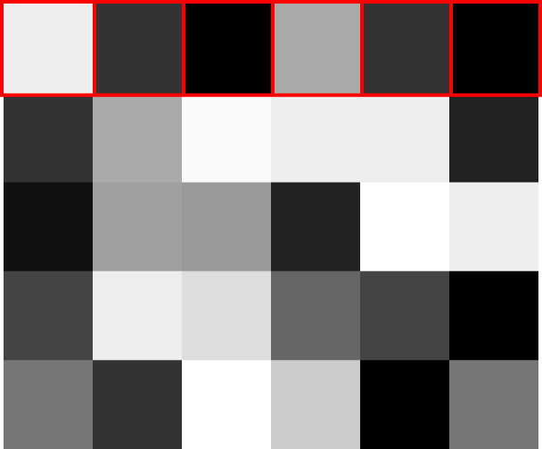
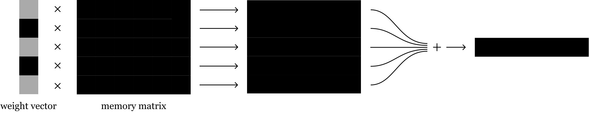
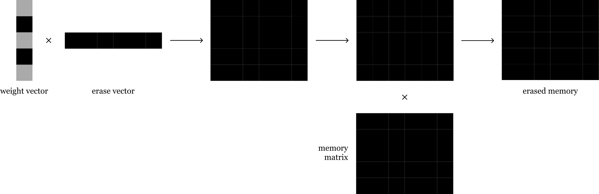
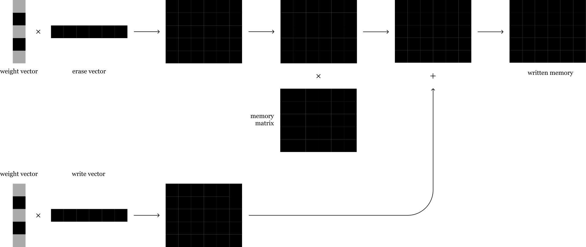
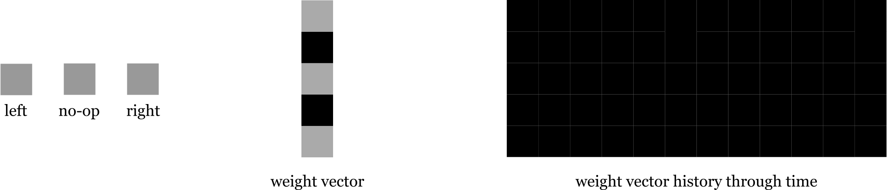
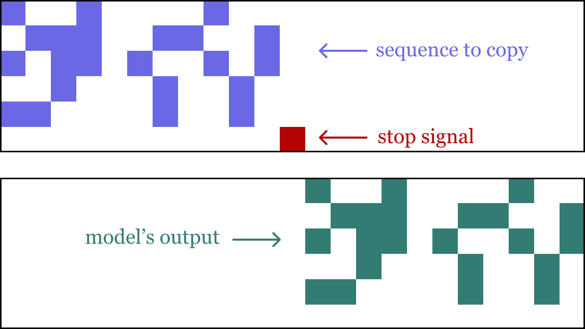
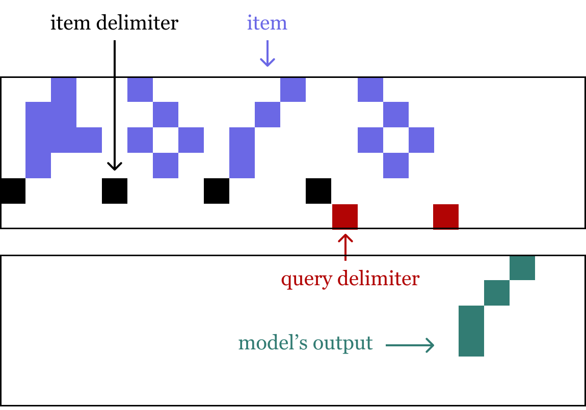

Equipping neural networks with differentiable memory: Neural Turing Machines
Jan 29, 2022
Most neural networks are unable to remember, and those that can cannot remember for long. Networks like LSTMs are able to use their hidden state to store data, but will forget over time. How can we create a neural network that theoretically never forgets, but is still trainable through gradient descent?
History
The Neural Turing Machine (NTM) is based on the Turing machine, first introduced by Alan Turing in 1936. A Turing machine is a theoretical machine that consists of an infinitely long "memory tape", on which the Turing machine can read and write bits from, based on a set of rules. What's special about the Turing machine is that, despite its simplicity, it's able to simulate or run any algorithm you give it. Recurrent Neural Networks have been proven to be Turing complete, meaning that they can do anything a Turing machine can. However, Turing complete behavior often cannot be learned by an RNN through gradient descent, and the nature of an RNN's Turing completeness is mostly just theoretical.

A Turing machine at work
The NTM serves to add features to the traditional RNN to alleviate the difficulties of simulating algorithms, while still being trainable by gradient descent. The two main contributions of the NTM are:
- An external memory system where data can be stored and read from
- An extensive memory addressing system that allows the NTM to read and write from memory based on content or based on location (more on this later)
Why is external memory important?
The main importance of external memory is that it's expandable. In a LSTM, each cell neuron requires its own set of weights. We can't just add more cells to give it more memory, because that would require retraining the network. However, external memory is not explicitly connected to the NTM, so we can make our memory as large as we need to, and the network won't even notice.
Another important aspect of external memory is that it's big. A LSTM has a single cell vector for passing data from previous timesteps. If it wants to remember two things at once, it has to learn an appropriate representation for both elements at once. However, with external memory, the NTM can just learn representations for each individual element, and write them to different parts of the memory.
Another important aspect of external memory is that it's big. A LSTM has a single cell vector for passing data from previous timesteps. If it wants to remember two things at once, it has to learn an appropriate representation for both elements at once. However, with external memory, the NTM can just learn representations for each individual element, and write them to different parts of the memory.
Components of an NTM
A NTM has three primary parts:
- Controller network: this is the core of the NTM, and controls the read and write heads. It receives the current input, as well as what it read from memory in the previous timestep, and produces an output, as well as a hidden state that the read and write heads use to produce their parameters.
- Memory: this is a \(M \times N\) matrix that stores data (where \(M\) is the size of memory, and \(N\) is the size of each memory item). The controller network will be able to read from the memory matrix using its read heads, and write to the memory matrix using its write heads.
- Read and write heads: these heads are what alter the memory. At each timestep, a head will take the information from the controller's hidden state, and produces a list of parameters. These parameters interact with the memory matrix to either read from it or write to it.

An example of a \(5 \times 6\) memory matrix. A row (highlighted in red) represents a single item in memory, which can store arbitrary information.
Reading from memory
Reading from memory is real simple. We have a weighting, \(\textbf{w}\), which is a \(M\) sized vector, and therefore has a value for every slot in memory. The higher a weighting value is for its corresponding memory slot, the more information we get out of that memory slot. Each value of the weighting vector must be between 0 and 1, where 0 is no attention at all (the NTM doesn't care about that memory at all), and 1 is full attention. We also need to normalize our weighting, so that all of its elements add up to 1. This is because it doesn't make sense for the network to "fully attend" to two positions in memory. Think of it like percentage of focus on a piece of memory. Every memory slot receives a certain percentage of focus from the NTM, and the sum of all percentages must add up to no less or no more than 1.
To read, we multiply every vector in memory by its corresponding weighting value. We then add up all the multiplied vectors. Since all the elements in the weighting vector sum up to 1, we've effectively just taken a weighted average of the elements in memory. Mathematically, what we're doing is
To read, we multiply every vector in memory by its corresponding weighting value. We then add up all the multiplied vectors. Since all the elements in the weighting vector sum up to 1, we've effectively just taken a weighted average of the elements in memory. Mathematically, what we're doing is
\(\textbf{r} = \sum_i{\textbf{w}_i\textbf{M}_i}\)
Or, with matrix multiplication,
\(\textbf{r} = \textbf{M}^{\top}\textbf{w}\)
where \(\textbf{r}\) is the read memory.

Hover over the weight vector (far left) to change weighting.
An illustration of how the NTM reads from memory. Each element from the weighting vector on the far left is multiplied elementwise with each memory from the memory matrix. We then add each memory slot up to get our final read vector. Notice that when you hover closely to a single weighting square, the read vector begins to look like the corresponding memory.
Writing to memory
Writing to memory is slightly more complicated. Writing is different than reading in that we not only need to decide where we write to, but also what to write. Write heads will also be able to erase stuff from memory. The write head will produce three vectors, instead of the read head's one vector. The first vector is the weighting vector, \(\textbf{w}\) (same as the read head), the second is the erase vector, \(\textbf{e}\), and the third is the write vector, \(\textbf{a}\).
First, we'll erase from memory. The erase vector is a \(N\) sized vector. This is the size of a memory slot.f The erase vector represents whether or not we keep a memory slot number. The weighting vector dictates how much each memory slot will be affected by the erase vector. A weighting of 0 would mean the memory stays totally the same. A weighting of 1 means that it's fully subjected to the erase vector. We take the weighting vector, and multiply each weighting value with the erase vector. We end up with an array of multiplied erase vectors
First, we'll erase from memory. The erase vector is a \(N\) sized vector. This is the size of a memory slot.f The erase vector represents whether or not we keep a memory slot number. The weighting vector dictates how much each memory slot will be affected by the erase vector. A weighting of 0 would mean the memory stays totally the same. A weighting of 1 means that it's fully subjected to the erase vector. We take the weighting vector, and multiply each weighting value with the erase vector. We end up with an array of multiplied erase vectors
\(\tilde{\textbf{e}} = [\textbf{w}_0\textbf{e}, \textbf{w}_1\textbf{e} \cdots, \textbf{w}_M\textbf{e}]^\top\)
Each value in this array corresponds to a location in memory. In this case, \(\textbf{w}_i\) is a scalar, so when we multiply a scalar with a vector like \(\textbf{e}\), we multiply each element in \(\textbf{e}\) by the scalar. Therefore, each element in the array is of size \(N\). We'll alter \(\tilde{\textbf{e}}\) just a little bit, by subtracting each element from 1
\(\tilde{\textbf{e}} = [1 - \textbf{w}_0\textbf{e}, 1 - \textbf{w}_1\textbf{e} \cdots, 1 - \textbf{w}_M\textbf{e}]^\top\)
To erase, we'll multiply the element in the array with its corresponding memory location.
\(\tilde{\textbf{M}}_i = \textbf{M}_i\tilde{\textbf{e}}_i\)
To summarize the erasure of memory in vectorized form
\(\tilde{\textbf{M}} = \textbf{M}(\textbf{1} - \textbf{w}\textbf{e}^{\top})\)

Hover over the weight vector to change weighting. Clicking on a cell of the erase vector will increment that cell's value by 0.2.
An illustration of how the NTM erases memory. The erase vector starts out with all ones, meaning it will erase all content from memory. Notice that if the weighting is heavily centered around a certain memory location, the altered memory will be grayed out for that memory location. Another thing to try out is to set the erase vector to all zeros. Notice that this allows the NTM to not erase anything, which is great for preserving memory.
Once we've erased what we want to erase, it's time to write. Writing and erasing both manipulate the write vector and the erase vector respectively with the weighting vector the same.
While erasing is
While erasing is
\(\tilde{\textbf{M}} = \textbf{M}(\textbf{1} - \textbf{w}\textbf{e}^{\top})\)
Writing is
\(\textbf{M}_{new} = \tilde{\textbf{M}} + \textbf{w}\textbf{a}^{\top}\)
Where \(\tilde{\textbf{M}}\) is the erased memory matrix mentioned before. The matrix multiplication, \(\textbf{w}\textbf{a}^{\top}\), is the exact same operation as mentioned in the previous paragraphs, but with the add vector instead of the erase vector. Also, note that instead of multiplying the memory matrix, we add to the memory matrix.

Hover over the weight vector to change weighting. Clicking on a cell of the erase or write vectors will increment that cell's value by 0.2.
An illustration of the full NTM write pipeline. Keep in mind, this process happens for each write head. Something I recommend you try out to really make things obvious is to set a single write value to 1, and keep the erase vector all ones. This will perfectly erase the memory that's been focused on, and perfectly write the single write value.
Computing the weighting vector
Add vectors and erase vectors are generated directly as outputs of the read/write heads, but the weighting vector, \(\textbf{w}\), is generated using a slightly more complicated process. Essentially, generating the weighting vector boils down into three steps: content based addressing, interpolation and location based addressing.
Content based addressing
Content based addressing uses a key vector to query a memory from the memory matrix. This key vector is generated directly as an output of the read/write head just like an add or erase vector, and is the basis for our preliminary weighting, \(\textbf{w}_c\).
If our memory matrix, \(\textbf{M}\) is of size \(M \times N\), then the key vector, \(\textbf{k}\) is a \(N\) sized vector. We will go through each memory slot, and compare the value stored in that memory slot with the key vector. The closer the memory slot value is to the key vector value, the higher the weighting is. The metric we use for distance, which we will denote \(f_k(\textbf{M}_i, \textbf{k})\) can be almost anything. \(\textbf{M}_i\) denotes the \(i\)th value of the memory matrix. As an example, we can use square distance: \(f_k(\textbf{M}_i, \textbf{k}) = \sum(\textbf{M}_i - \textbf{k})^2\). However, in the paper, the authors used cosine similarity :
If our memory matrix, \(\textbf{M}\) is of size \(M \times N\), then the key vector, \(\textbf{k}\) is a \(N\) sized vector. We will go through each memory slot, and compare the value stored in that memory slot with the key vector. The closer the memory slot value is to the key vector value, the higher the weighting is. The metric we use for distance, which we will denote \(f_k(\textbf{M}_i, \textbf{k})\) can be almost anything. \(\textbf{M}_i\) denotes the \(i\)th value of the memory matrix. As an example, we can use square distance: \(f_k(\textbf{M}_i, \textbf{k}) = \sum(\textbf{M}_i - \textbf{k})^2\). However, in the paper, the authors used cosine similarity :
\(f_k(\textbf{M}_i, \textbf{k}) = \frac{\textbf{M}_i \cdot \textbf{k}}{||\textbf{M}_i|| \cdot ||\textbf{k}||}\)
\(A \cdot B\) is the dot product between vectors \(A\) and \(B\), and \(||A||\) and \(||B||\) are the magnitudes of the vectors \(A\) and \(B\). The reason why the authors chose cosine similarity is that it measures the cosine of the angle between vectors \(A\) and \(B\). What's nice about this is that if the NTM wants to apply a high weighting to a certain memory slot index \(i\), the key vector does not have to be exactly \(\textbf{M}_i\), but instead any vector \(a\textbf{M}_i\), for any scalar \(a\), since the angle between two vectors is independent of their magnitude. Basically, the magnitude of the query and memory slot vectors don't have to match, just their direction.
So we apply \(f_k(\textbf{M}_i, \textbf{k})\) to all elements in \(\textbf{M}\), and we produce a preliminary weighting vector, \(\textbf{w}_c\) (subscript \(c\) for "content").
So we apply \(f_k(\textbf{M}_i, \textbf{k})\) to all elements in \(\textbf{M}\), and we produce a preliminary weighting vector, \(\textbf{w}_c\) (subscript \(c\) for "content").
\(\textbf{w}_c = [f_k(\textbf{M}_0, \textbf{k}), f_k(\textbf{M}_1, \textbf{k}) \cdots ,f_k(\textbf{M}_M, \textbf{k})]^\top\)
Once we have this weighting vector, we're going to do some processing to it, to make sure that all weighting values add up to 1 (reference to this). The natural choice for this normalization is the softmax function:
\(\textbf{w}_c^i := \frac{\exp{(\textbf{w}_c^i)}}{\sum_j \exp{(\textbf{w}_c^j)}}\)
Notice that we've moved the index number to the superscript.
One last thing. We want our network to be able to strengthen its focus on a piece of memory. To do this, we'll multiply every element in \(\textbf{w}_c\) by a parameter outputted by the read/write head, \(\beta\). This is an easy way of making the network's attention clearer.
One last thing. We want our network to be able to strengthen its focus on a piece of memory. To do this, we'll multiply every element in \(\textbf{w}_c\) by a parameter outputted by the read/write head, \(\beta\). This is an easy way of making the network's attention clearer.
\(\textbf{w}_c^i := \frac{\exp{(\beta \textbf{w}_c^i)}}{\sum_j \exp{(\beta \textbf{w}_c^j)}}\)
This step is called strengthening, for obvious reasons.
Now we've got our normalized and strengthened weighting vector. We're done with the first part of memory addressing. Since we found our weightings based on memory similarity to the key vector, we call this content based addressing.
Now we've got our normalized and strengthened weighting vector. We're done with the first part of memory addressing. Since we found our weightings based on memory similarity to the key vector, we call this content based addressing.
Clicking on a cell of the key vector will increment that cell's value by 0.2.
An illustration of how the NTM performs content addressing. Notice that when the key vector resembles one of the rows in the memory matrix, that row's corresponding weight value will be particularly high (black). Keep in mind that since we use cosine similarity, the key vector only needs to be some scalar multiple of a vector in the memory matrix. An easy way to show this is to increase the value of a single cell of the key vector, leaving all other cells to 0. The weighting does not change at all.
Another thing to notice is that the normalized weight vector will often look quite gray, while the sharpened weight vector will generally show more intense attention to certain locations in memory.
Another thing to notice is that the normalized weight vector will often look quite gray, while the sharpened weight vector will generally show more intense attention to certain locations in memory.
Interpolation value
Before we talk about location based addressing, we need to introduce the concept of time to the NTM. In order to do this, we're going to have to reconfigure our notation a tiny bit. The current timestep number will be denoted as \(t\), and will be in the subscript of a variable, like so: \(\textbf{w}_t\). The name of the variable will be in the superscript. For example, the content weighting vector, \(\textbf{w}_c\) under the old notation, will now be \(\textbf{w}_t^c\). To index a variable under this new notation, we'll use \(\textbf{w}_t^c[i]\) to indicate the \(i\)th value of the vector or matrix.
The purpose of the interpolation value is to decide between either using the current content weighting, or keeping the final weighting produced by the head in the previous timestep. The importance of this will become apparent later. The interpolation value will be denoted \(g_t\), and will be \(\in [0, 1]\). To find the interpolated weighting, \(\textbf{w}_t^g\)
The purpose of the interpolation value is to decide between either using the current content weighting, or keeping the final weighting produced by the head in the previous timestep. The importance of this will become apparent later. The interpolation value will be denoted \(g_t\), and will be \(\in [0, 1]\). To find the interpolated weighting, \(\textbf{w}_t^g\)
\(\textbf{w}_t^g = g_t \textbf{w}_t^c + (1 - g_t)\textbf{w}_{t - 1}\)
Basically, if \(g_t\) is \(0\), then we'll abandon our content based weighting vector, and just use the old one from the previous timestep.
\(\textbf{w}_t^g = 0 \cdot \textbf{w}_t^c + (1 - 0)\textbf{w}_{t - 1} = \textbf{w}_{t - 1}\)
If \(g_t\) is \(1\), then we'll use our content based weighting vector, and discard the old one from the previous timestep.
\(\textbf{w}_t^g = 1 \cdot \textbf{w}_t^c + (1 - 1)\textbf{w}_{t - 1} = \textbf{w}_{t}^c\)
Location based addressing/shift vector
The shift vector allows us to shift our focus to the left or right, and is the reason why our interpolation value is important. Let's say we'd like to just iterate through all slots in memory until we have the one we want instead of directly locating memory via a key vector. This means that we don't want the content based addressing weighting vector at all.
With an interpolation value, this is an easy problem to solve; we just set the interpolation scalar to \(0\), and we'll use the weighting from the previous timestep. Now, to iterate through memory, we just set our shift vector to shift our focus one to the left or right. If we repeat this, our weighting vector would be shifted to the left/right over and over again, allowing us to continually shift our focus through memory throughout timesteps.
With an interpolation value, this is an easy problem to solve; we just set the interpolation scalar to \(0\), and we'll use the weighting from the previous timestep. Now, to iterate through memory, we just set our shift vector to shift our focus one to the left or right. If we repeat this, our weighting vector would be shifted to the left/right over and over again, allowing us to continually shift our focus through memory throughout timesteps.

An illustration of using the shift vector. In this scenario, the interpolation value is locked to \(0\) so the current content weighting vector is not considered at all. Notice that by continuously shifting either left or right, you can iterate through memory by shifting the NTM's focus.
Note that shifting too far to the right or left will cause the focus to wrap around to the other side.
Note that shifting too far to the right or left will cause the focus to wrap around to the other side.
The read head will output a shift vector, \(\textbf{s}_t\), where each element \(\textbf{s}_t[i]\) represents how much we are going to shift by \(i - \lfloor{\frac{|\textbf{s}_t|}{2}}\rfloor\). For most tasks, we'll only want to be able to shift by 1 unit to the left or right, meaning our shift vector will look like, \([ s_{noshift}, s_{right}, 0, 0 \cdots, s_{left}]^\top\). The shift vector will need to be the same size as our weighting vector. The value that represents no-shift is in the 0th index, the value that represents one-right-shift is in the 1st index, and so on. The value that represents one-left-shift is in the -1st index, which wraps around to the back of the vector, which is evident in the example shift vector above. Notice that the shift amount (like 1, 0, -1) is exactly the same as the shift value's index in the shift vector. Our shift vector values must also add up to one, so we will need to normalize the values \(s_{left}\), \(s_{noshift}\), \(s_{right}\) with softmax so they add up to one. Note that we are not going to softmax the whole shift vector, just the shift values.
As a quick example, let's say our interpolated weighting vector is \([0.1, 0.15, 0.65, 0.05, 0.05]^\top\), and our shift vector is \([0, 0, 0, 0, 1]^\top\), the new shifted weighting vector would be \([0.15, 0.65, 0.05, 0.05, 0.1]^\top\). Notice that the first element in the vector has been wrapped around to the other side. This shift in weighting can be viewed either as shift one unit to the left, or a shift four units to the right.
To do our shift, we're going to do something called a circular convolution. Basically, given our interpolated weighting vector \(\textbf{w}_t^g\) and a shift vector \(\textbf{s}_t\)
As a quick example, let's say our interpolated weighting vector is \([0.1, 0.15, 0.65, 0.05, 0.05]^\top\), and our shift vector is \([0, 0, 0, 0, 1]^\top\), the new shifted weighting vector would be \([0.15, 0.65, 0.05, 0.05, 0.1]^\top\). Notice that the first element in the vector has been wrapped around to the other side. This shift in weighting can be viewed either as shift one unit to the left, or a shift four units to the right.
To do our shift, we're going to do something called a circular convolution. Basically, given our interpolated weighting vector \(\textbf{w}_t^g\) and a shift vector \(\textbf{s}_t\)
\(\tilde{\textbf{w}}_t[i] = \sum_{j} \textbf{w}_t^g[j]\textbf{s}_t[i - j]\)
Where \(\tilde{\textbf{w}}_t\) is the shifted weighting.
As we did with content based addressing, we're going to normalize and strengthen our shifted weighting.
\(\textbf{w}_t[i] = \frac{\tilde{\textbf{w}}_t[i]^{\gamma_t}}{\sum_j{\tilde{\textbf{w}}_t[j]^{\gamma_t}}}\)
This time, we don't use softmax, and to strengthen (the authors use the term sharpen instead of strengthen for this step), we have a sharpen scalar \(\gamma_t \leq 1\). \(\textbf{w}_t\) is our final weighting vector! Every timestep, each of the read and write head(s) will generate their own key vector, strengthen scalar, interpolation scalar, shift vector and sharpen scalar, which interact with memory to generate a weighting vector. These weighting vectors can either be used to read (read heads), or be combined with an add and erase vector to alter memory (write heads).
\(\require{AMScd}\)
\begin{CD}
\textbf{k}_t @>>> \textbf{w}_t^c @>>> \textbf{w}_t^g @>>> \boxed{\textbf{w}}\\
@. @AAA @AAA @AAA\\
@. \textbf{M}_t, \beta_t @. \textbf{w}_{t-1}^c @. \textbf{s}_t, \gamma_t
\end{CD}
Controller network
Now, to the final component of the NTM: the controller network. This is the core of a NTM, and is what controls the read and write heads. Every timestep, the controller network receives the current input, \(\textbf{i}_{t}\) for whatever task it's doing, as well as the read vector, \(\textbf{r}_{t - 1}\) from the previous timestep. The controller outputs an output vector, \(\textbf{z}_t\) from those inputs, and the output vector is what is compared to the target vector \(\textbf{y}_t\).
Typically, a controller network is a regular feed-forward fully connected neural network, but it might also make sense to have a LSTM as a controller network. The nice thing about having a LSTM is that in addition to having permanent global memory in the memory matrix, the LSTM will also have some local transient memory, which may or may not help in completing some tasks. For the sake of this article, I will be sticking to a fully connected neural network.
Typically, a controller network is a regular feed-forward fully connected neural network, but it might also make sense to have a LSTM as a controller network. The nice thing about having a LSTM is that in addition to having permanent global memory in the memory matrix, the LSTM will also have some local transient memory, which may or may not help in completing some tasks. For the sake of this article, I will be sticking to a fully connected neural network.
Copy task
The copy task is one of the most obvious showcases of the power of the NTM. Essentially, we give the NTM a series of inputs to the controller network, then input a stop signal. From then on the network receives no input, but the controller is required to output the original series of inputs again.

An example of the copy task. The purple squares on the top represent a 11-long sequence of 5 bits to memorize. We signal the end of the sequence input by a special 6th bit stop signal (red)
What is of note is that the NTM was trained on sequences of length 10, but manages to extrapolate well to much longer sequences. An LSTM would be unlikely to remember such a sequence. Indeed, in the original paper, the LSTM model is unable to remember sequences longer than 20.
Another difference between train and inference is that the memory is expanded during inference. During training, the memory is only 20 slots large, while during inference the memory can be arbitrarily large. Since the NTM uses content and location based addressing, it's simply able to use that extra memory to store more data.
Another difference between train and inference is that the memory is expanded during inference. During training, the memory is only 20 slots large, while during inference the memory can be arbitrarily large. Since the NTM uses content and location based addressing, it's simply able to use that extra memory to store more data.
Input
Output
Memory
Read weights
Write weights
mem_slots= seq_length=
An actual Neural Turing Machine (it's running in browser!) model trained on the copy task. Click on the 'step' button to walk through the copy task. Edit the text boxes next to "mem_slots" and "seq_length" to change the number of memory slots the model has access to, and the length of the sequence to memorize respectively. Weird stuff happens if "mem_slots" < "seq_length"!
The algorithm that the model learns is to write columns of the sequence in consecutive locations in memory (evidenced by the "write weights" table). Once the stop signal is inputted, the model begins reading from the first location in memory, shifting forward until the entire sequence is outputted.
An interesting quirk about this model is that it was trained on sequences of length 10, but had 40 memory slots. This meant that it never needed to learn to stop moving the write head forward once it finished copying the sequence.
The algorithm that the model learns is to write columns of the sequence in consecutive locations in memory (evidenced by the "write weights" table). Once the stop signal is inputted, the model begins reading from the first location in memory, shifting forward until the entire sequence is outputted.
An interesting quirk about this model is that it was trained on sequences of length 10, but had 40 memory slots. This meant that it never needed to learn to stop moving the write head forward once it finished copying the sequence.
The demo above shows the model's use of location based addressing to write the sequence to memorize into memory in consecutive locations. We can also see that the NTM learns an adequate algorithm to manipulate the read and write heads to complete the copy task.
Associative recall task
While the copy task makes exclusive use of location addressing, associative recall is a task that requires the use of both location and content addressing. In this task, we give the NTM "items" to remember. These items consist of 3 columns of 4 bits (each item is a 4 x 3 block of bits). When we are done inputting the items, we input a query item, which is one of the previously inputted items. The goal of the NTM is to output the item that comes after the query item.
What makes this task tricky is the model needs to jointly learn to write items to memory, and to fetch the appropriate item to output. While writing can be done with location based addressing, finding the item requires content addressing. What's more, since items are not single vectors, but blocks of 3 vectors, the NTM needs to build up a representation of the query item before searching it up.

An example of the copy task. The purple squares on the top represent a 11-long sequence of 5 bits to memorize. We signal the end of the sequence input by a special 6th bit stop signal (red)
Input
Output
Memory
Read weights
Write weights
mem_slots= num_items=
An NTM trained on the associative recall task. Click on the 'step' button to walk through the copy task. Edit the text boxes next to "mem_slots" and "seq_length" to change the number of memory slots the model has access to, and the number of items to memorize respectively.
This model was not graded on its outputs except for the final three, so there will be some artifacts before and after the model outputs the item that comes after the queried item.
An interesting edge case, if you're lucky enough to get one, is if two or more duplicate items occur. In this case, the model has no clue which item is the true query item, and the output is usually some superposition of the possible answers.
This model was not graded on its outputs except for the final three, so there will be some artifacts before and after the model outputs the item that comes after the queried item.
An interesting edge case, if you're lucky enough to get one, is if two or more duplicate items occur. In this case, the model has no clue which item is the true query item, and the output is usually some superposition of the possible answers.
Conclusion
Although NTMs are quite an old model, I think they are one of the most interesting early "innovative" neural network models. They are simple, compared to their more modern counterparts like Differentiable Neural Computers, and showcase the power of models when equipped with the right tools.
NTMs also poses important questions regarding the capacity of machine learning algorithms versus their computational power: it is unreasonable to expect an LSTM to generalize the copy task to sequences much longer than it was trained on just by adding more compute; instead, equipping a controller with a set of read and write heads allows it to not only become more efficient, but learn a fully generalizable algorithm. Therefore, are the models we have developed so far like the LSTM, and if so, is there something that we have yet to discover that would greatly increase the expressiveness of models?
NTMs also poses important questions regarding the capacity of machine learning algorithms versus their computational power: it is unreasonable to expect an LSTM to generalize the copy task to sequences much longer than it was trained on just by adding more compute; instead, equipping a controller with a set of read and write heads allows it to not only become more efficient, but learn a fully generalizable algorithm. Therefore, are the models we have developed so far like the LSTM, and if so, is there something that we have yet to discover that would greatly increase the expressiveness of models?